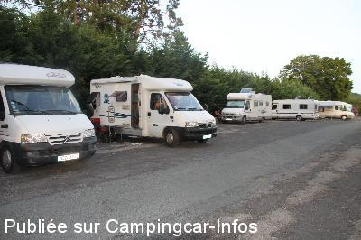
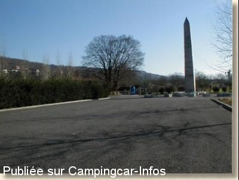

APN = Parking toléré jour/nuit de :
SOUILLAC
(N° 800)
Accès/adresse :
Place du Baillot
46200 SOUILLAC
46200 SOUILLAC
Latitude : (Nord) 44.89155° Décimaux ou 44° 53′ 29′′
Longitude : (Est) 1.47644° Décimaux ou 1° 28′ 35′′
Tarif : Gratuit
Services :


Autres informations :
Tel Mairie + 33 (0)565 327 100
Tél Office du Tourisme
+ 33(0)5 65 37 81 56

Le 26/08/2013 par sybrub

Le 13/03/2003 par Robert Art
de
01061951
le 12/04/2016 :
Au Petit Casino, une borne euro relais. gratuit si nous faisons le plein de carburant ou des courses
Au Petit Casino, une borne euro relais. gratuit si nous faisons le plein de carburant ou des courses
de
LNP
le 18/12/2015 :
La borne de service ne fonctionne plus. On peut seulement vidanger.
Possibilité de faire le plein d'eau et K7 WC à Pinsac, (4 kms) dans les toilettes publiques derrière la mairie.
Info : le permis de construire délivré pour une nouvelle aire est au nom de l'organisme qui gère le camping !!!
La borne de service ne fonctionne plus. On peut seulement vidanger.
Possibilité de faire le plein d'eau et K7 WC à Pinsac, (4 kms) dans les toilettes publiques derrière la mairie.
Info : le permis de construire délivré pour une nouvelle aire est au nom de l'organisme qui gère le camping !!!
de
balata41
le 08/10/2015 :
Bonjour
Ce jour 8 Octobre , je viens d'avoir au téléphone le responsable a la mairie concernant le commentaire ci dessous .
Celui ci m'a dit que en fonction des recours en cours il est toujours possible de stationner sur l'aire de stationnement sans problème.
Bonjour
Ce jour 8 Octobre , je viens d'avoir au téléphone le responsable a la mairie concernant le commentaire ci dessous .
Celui ci m'a dit que en fonction des recours en cours il est toujours possible de stationner sur l'aire de stationnement sans problème.
de
apple44
le 20/05/2015 :
De passage mi-avril sur cette aire de stationnement gratuite avec services payants et déjà très fréquentée à cette saison.
De nombreux emplacements disponibles, très calme, à 2 pas du centre ville et avec des belles ballades à proximité. Boulangerie toute proche et même si la ville semble mourir, il y a de belles choses à voir : abbaye et musée des automates.
De passage mi-avril sur cette aire de stationnement gratuite avec services payants et déjà très fréquentée à cette saison.
De nombreux emplacements disponibles, très calme, à 2 pas du centre ville et avec des belles ballades à proximité. Boulangerie toute proche et même si la ville semble mourir, il y a de belles choses à voir : abbaye et musée des automates.
de
coala84
le 26/11/2014 :
en novembre ..calme,visite du village,abbaye,musé des automates et commerçants nombreux et sympas
en novembre ..calme,visite du village,abbaye,musé des automates et commerçants nombreux et sympas
de
nevis 76
le 26/08/2014 :
Aire sympa avec des emplacements a l'ombre ou au soleil et un sol dur.30 places peuvent etre utilisees.Bien situee tout pres du centre ville.
Aire sympa avec des emplacements a l'ombre ou au soleil et un sol dur.30 places peuvent etre utilisees.Bien situee tout pres du centre ville.
de
SYBRUB
le 26/08/2013 :
accès baignade après le camping, une aire sympa et agréable. Nous y sommes passés en aout 2013
accès baignade après le camping, une aire sympa et agréable. Nous y sommes passés en aout 2013
de
AUTHENAC
le 11/09/2011 :
nous allons fréquemment sur cette aire certes chargée mais tranquille , pour les randonneurs ; randonnée ' de ponts en ports 11 kms belle découverte.
si aire bondée possibilité de passer la nuit au parking des grottes de LACAVE ( nuit tranquille )
nous allons fréquemment sur cette aire certes chargée mais tranquille , pour les randonneurs ; randonnée ' de ponts en ports 11 kms belle découverte.
si aire bondée possibilité de passer la nuit au parking des grottes de LACAVE ( nuit tranquille )
de
serge34
le 11/09/2011 :
de passage en août pour la 2eme fois toujours aussi bien et tranquille faut pas arriver trop tard car très connu , ville sympathique et balade au bord de la dordogne juste a coté
de passage en août pour la 2eme fois toujours aussi bien et tranquille faut pas arriver trop tard car très connu , ville sympathique et balade au bord de la dordogne juste a coté
de
vafram 33
le 02/08/2010 :
De passage pour une nuit début juillet. Très tranquille, près des commerces et du cinéma car nous y avons été à pied et surtout un parc aquatique si vous avez des enfants (Quercyland).
De passage pour une nuit début juillet. Très tranquille, près des commerces et du cinéma car nous y avons été à pied et surtout un parc aquatique si vous avez des enfants (Quercyland).